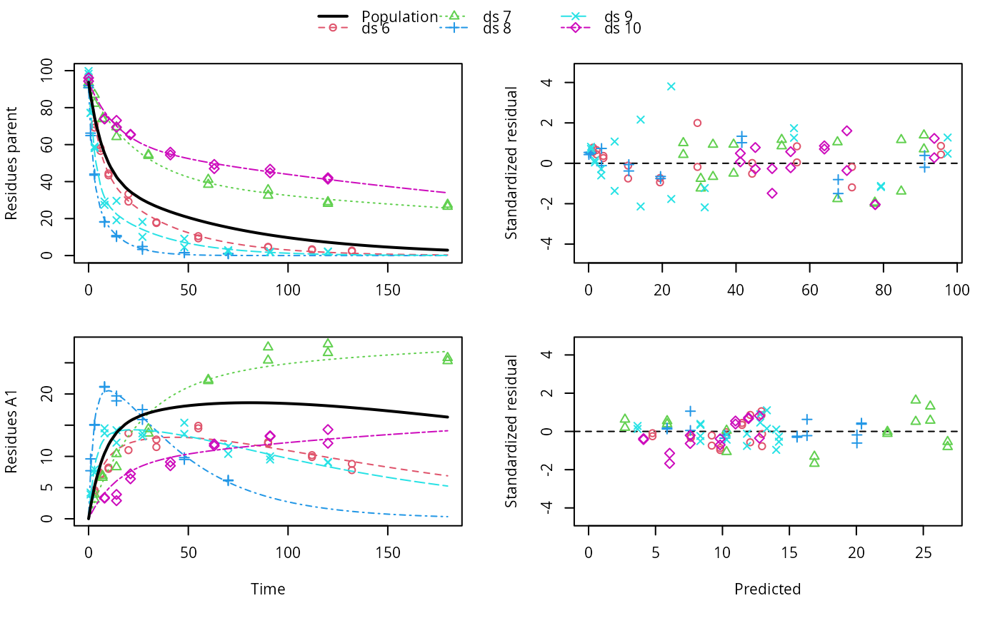
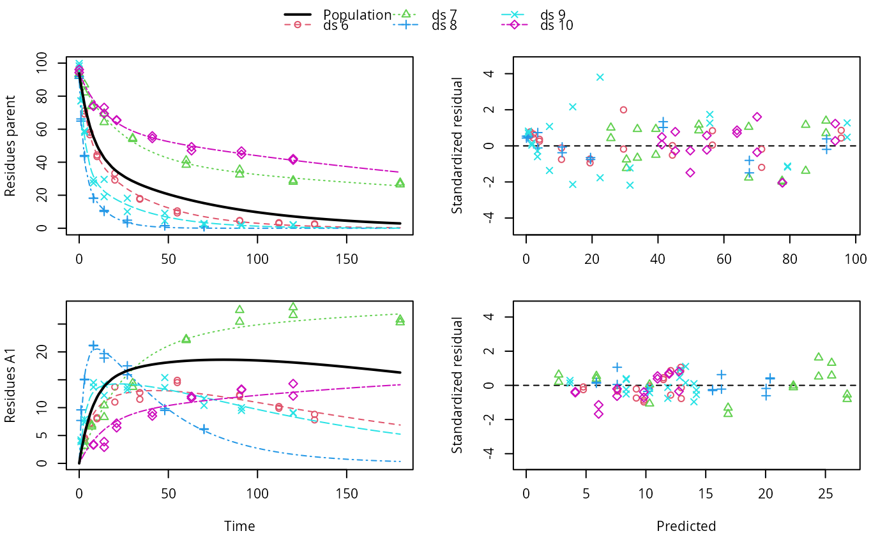

Plot predictions from a fitted nonlinear mixed model obtained via an mmkin row object
Source:R/plot.mixed.mmkin.R
plot.mixed.mmkin.RdPlot predictions from a fitted nonlinear mixed model obtained via an mmkin row object
Usage
# S3 method for class 'mixed.mmkin'
plot(
x,
i = 1:ncol(x$mmkin),
obs_vars = names(x$mkinmod$map),
standardized = TRUE,
covariates = NULL,
covariate_quantiles = c(0.5, 0.05, 0.95),
xlab = "Time",
xlim = range(x$data$time),
resplot = c("predicted", "time"),
pop_curves = "auto",
pred_over = NULL,
test_log_parms = FALSE,
conf.level = 0.6,
default_log_parms = NA,
ymax = "auto",
maxabs = "auto",
ncol.legend = ifelse(length(i) <= 3, length(i) + 1, ifelse(length(i) <= 8, 3, 4)),
nrow.legend = ceiling((length(i) + 1)/ncol.legend),
rel.height.legend = 0.02 + 0.07 * nrow.legend,
rel.height.bottom = 1.1,
pch_ds = c(1:25, 33, 35:38, 40:41, 47:57, 60:90)[1:length(i)],
col_ds = pch_ds + 1,
lty_ds = col_ds,
frame = TRUE,
...
)Arguments
- x
An object of class mixed.mmkin, saem.mmkin or nlme.mmkin
- i
A numeric index to select datasets for which to plot the individual predictions, in case plots get too large
- obs_vars
A character vector of names of the observed variables for which the data and the model should be plotted. Defauls to all observed variables in the model.
- standardized
Should the residuals be standardized? Only takes effect if
resplot = "time".- covariates
Data frame with covariate values for all variables in any covariate models in the object. If given, it overrides 'covariate_quantiles'. Each line in the data frame will result in a line drawn for the population. Rownames are used in the legend to label the lines.
- covariate_quantiles
This argument only has an effect if the fitted object has covariate models. If so, the default is to show three population curves, for the 5th percentile, the 50th percentile and the 95th percentile of the covariate values used for fitting the model.
- xlab
Label for the x axis.
- xlim
Plot range in x direction.
- resplot
Should the residuals plotted against time or against predicted values?
- pop_curves
Per default, one population curve is drawn in case population parameters are fitted by the model, e.g. for saem objects. In case there is a covariate model, the behaviour depends on the value of 'covariates'
- pred_over
Named list of alternative predictions as obtained from mkinpredict with a compatible mkinmod.
- test_log_parms
Passed to mean_degparms in the case of an mixed.mmkin object
- conf.level
Passed to mean_degparms in the case of an mixed.mmkin object
- default_log_parms
Passed to mean_degparms in the case of an mixed.mmkin object
- ymax
Vector of maximum y axis values
- maxabs
Maximum absolute value of the residuals. This is used for the scaling of the y axis and defaults to "auto".
- ncol.legend
Number of columns to use in the legend
- nrow.legend
Number of rows to use in the legend
- rel.height.legend
The relative height of the legend shown on top
- rel.height.bottom
The relative height of the bottom plot row
- pch_ds
Symbols to be used for plotting the data.
- col_ds
Colors used for plotting the observed data and the corresponding model prediction lines for the different datasets.
- lty_ds
Line types to be used for the model predictions.
- frame
Should a frame be drawn around the plots?
- ...
Further arguments passed to
plot.
Examples
ds <- lapply(experimental_data_for_UBA_2019[6:10],
function(x) x$data[c("name", "time", "value")])
names(ds) <- paste0("ds ", 6:10)
dfop_sfo <- mkinmod(parent = mkinsub("DFOP", "A1"),
A1 = mkinsub("SFO"), quiet = TRUE)
# \dontrun{
f <- mmkin(list("DFOP-SFO" = dfop_sfo), ds, quiet = TRUE)
plot(f[, 3:4], standardized = TRUE)
# For this fit we need to increase pnlsMaxiter, and we increase the
# tolerance in order to speed up the fit for this example evaluation
# It still takes 20 seconds to run
f_nlme <- nlme(f, control = list(pnlsMaxIter = 120, tolerance = 1e-3))
plot(f_nlme)
 f_saem <- saem(f, transformations = "saemix")
plot(f_saem)

f_obs <- mmkin(list("DFOP-SFO" = dfop_sfo), ds, quiet = TRUE, error_model = "obs")
f_nlmix <- nlmix(f_obs)
#> Error in nlmix(f_obs): could not find function "nlmix"
plot(f_nlmix)
#> Error: object 'f_nlmix' not found
# We can overlay the two variants if we generate predictions
pred_nlme <- mkinpredict(dfop_sfo,
f_nlme$bparms.optim[-1],
c(parent = f_nlme$bparms.optim[[1]], A1 = 0),
seq(0, 180, by = 0.2))
plot(f_saem, pred_over = list(nlme = pred_nlme))
# }
f_saem <- saem(f, transformations = "saemix")
plot(f_saem)

f_obs <- mmkin(list("DFOP-SFO" = dfop_sfo), ds, quiet = TRUE, error_model = "obs")
f_nlmix <- nlmix(f_obs)
#> Error in nlmix(f_obs): could not find function "nlmix"
plot(f_nlmix)
#> Error: object 'f_nlmix' not found
# We can overlay the two variants if we generate predictions
pred_nlme <- mkinpredict(dfop_sfo,
f_nlme$bparms.optim[-1],
c(parent = f_nlme$bparms.optim[[1]], A1 = 0),
seq(0, 180, by = 0.2))
plot(f_saem, pred_over = list(nlme = pred_nlme))
# }